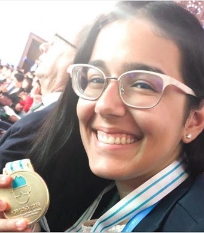
Ivna Ferreira Gomes
1º ouro na ICHO 2018
Ivna Ferreira Gomes
Bronze na ICHO 2017.
ICHO — Olimpíada Internacional de QuímicaHistórias de meninas brasileiras premiadas em olimpíadas científicas nacionais e internacionais.
Conheça as premiadas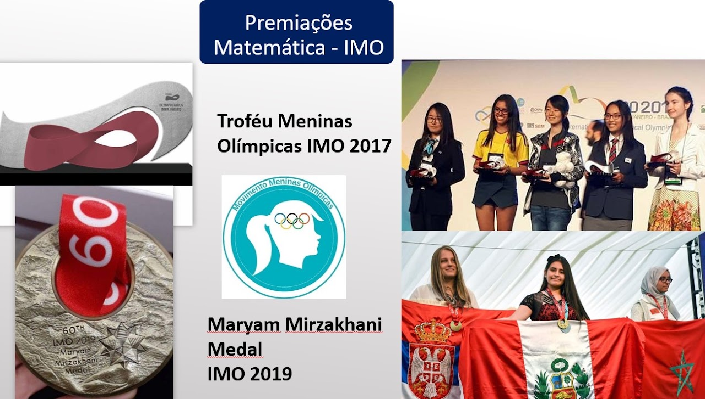
Premiações internacionais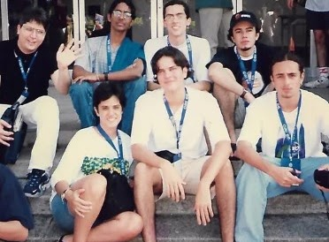
Talentos brasileiros
Ivna Ferreira GomesBronze na ICHO 2017.
ICHO — Olimpíada Internacional de Química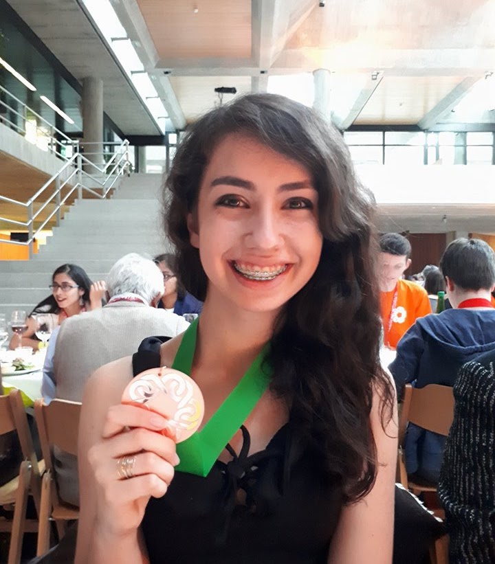
Mariana Bigolin GroffPrata em 2018 e bronze em 2017.
EGMO — Olimpíada Europeia de Matemática para Garotas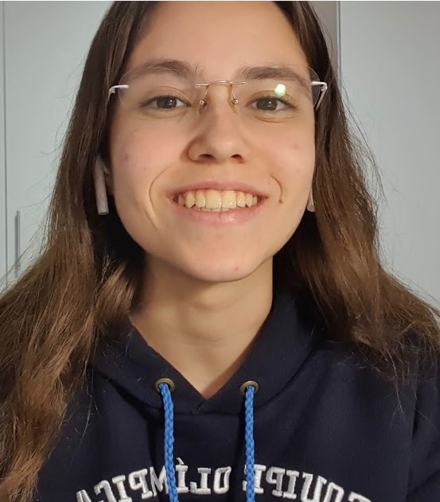
Carolina Valle CostaBronze na IOI 2021.
EGOI — Olimpíada Europeia de Informática para Garotas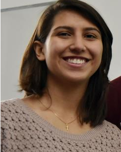
Imagem da IPhO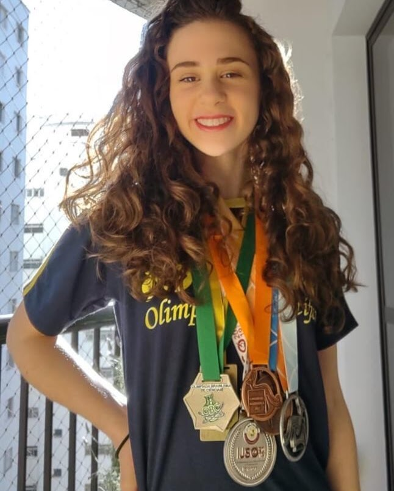
Imagem da OIbFEm 2017, o Movimento Meninas Olímpicas propôs o Troféu Meninas Olímpicas à Olimpíada Internacional de Matemática.
O Brasil teve apenas sete meninas em equipes da IMO nas edições de 1983, 1988, 1992, 1998, 2002, 2003, 2010, 2011 e 2012. As meninas representam aproximadamente 10% das participantes.
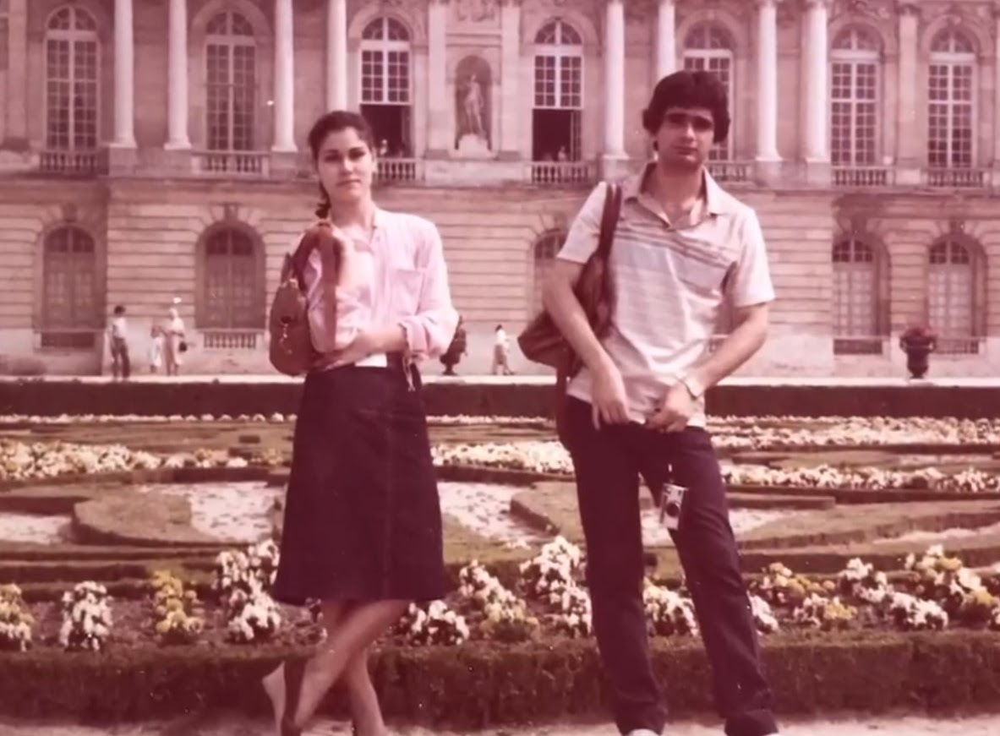
Foto: IMO 1983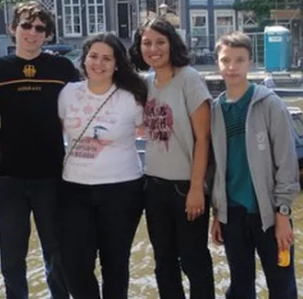
Foto: IMO 2011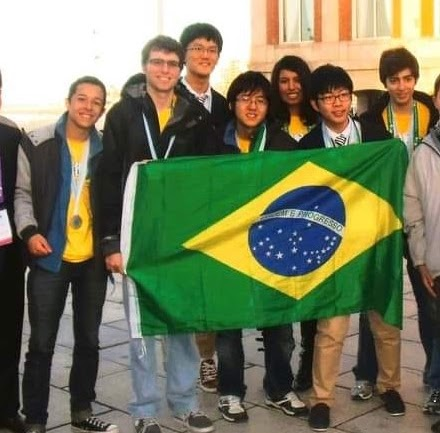
Foto: IMO 2012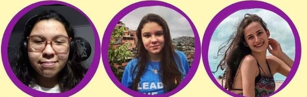
Imagem da equipe ICHO 2021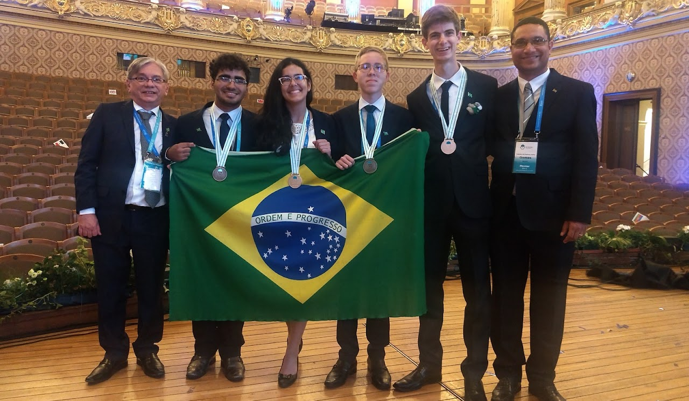
Imagem da ICHO 2018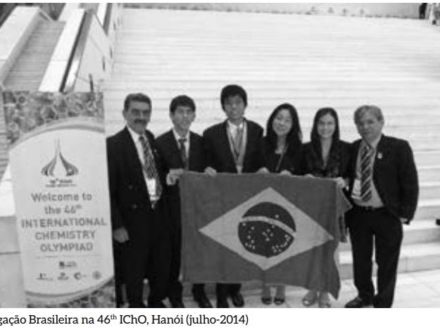
Imagem da ICHO 2014Desde 2016, mais de uma dezena de olimpíadas nacionais e internacionais criaram prêmios especiais para meninas.
Troféu para Meninas.
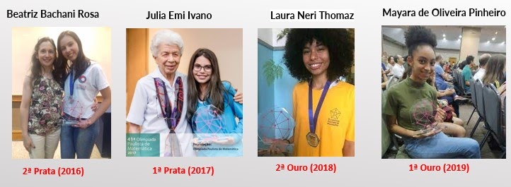
Imagem da premiação da OPMPremiações especiais para meninas.
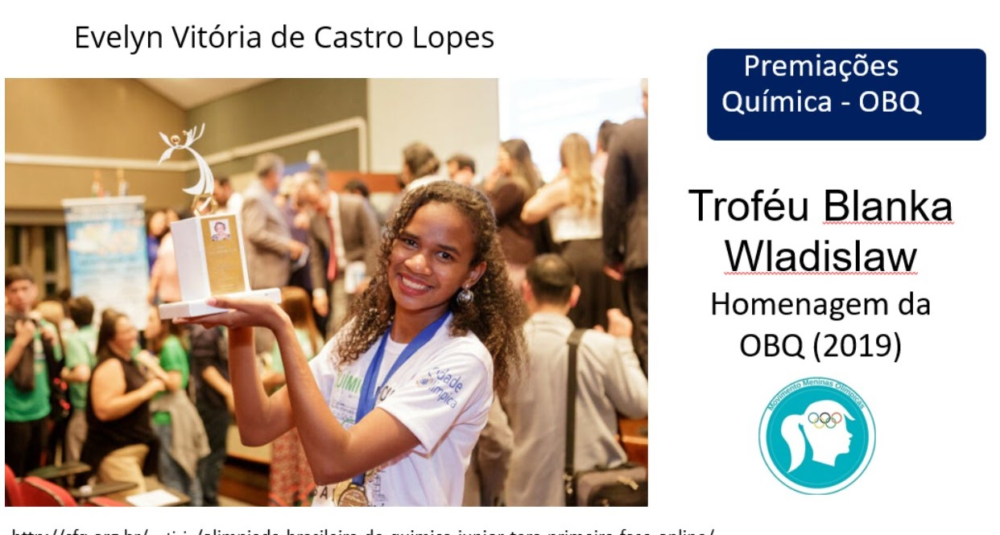
Imagem dos troféus 2016–2020Novas premiações e reconhecimentos.
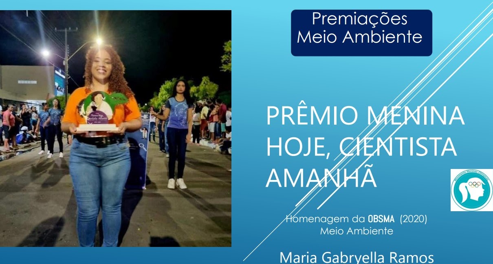
Imagem dos troféus 2022–2024Geo Brasil 2022: Ana Beatriz Souza Machado, Ana Beatriz Gomes dos Santos e Joana Liz Leita de Luna.
ONC 2022: Paula Silveira Araújo, Ana Clara Nunes Betanzzo, Luísa Dantas Portela, Ana Clara Leal Machado e Maria Eduarda Oliveira Gonçalves.
Biotec 2022: Maria Luísa Reis Neves.
ONC 2023: Eduarda Borges Oliveira de Almeida, Kaylanny Stefannely de Lira Ferreira, Ângela Kétlyn Silva de Souza, Isabelle Marin Della Méa e Amanda de Souza Carvalho.
OBECON 2024: Manuela Miranda Buesa.
OBB 2024: Iara Vitarelli.
Luiza Clara de Albuquerque Pacheco
Fernanda Ferro Morais
Maria Eduarda Carvalho Martins
Jessica Guedes
Bianca Araújo
Daniela Fernada Giraldo
Giovanna Gualberto de Melo
Camila Maede Shida
Gabriella Santana Morgado
Julia de Paula Pessoa Leguiza
Luiza Calligaro Menegotto
Alice Ella Scheider
Bruna Holanda Barbosa Nogueira
Cecilia Mileski de Paula
Luisa Batista Mesquita
Maria Clara Fontes Silva
Sara Miyuka Abe
Isabela Ruthner Dorn
Amanda Oliveira do Carmo
Beatriz Santos Farias
Emanuele Cunha Turri
Emily Raiele dos Santos Silveira
Isabela Ramos Nascimento
Isabelle Saunders Vasconcelos
Leticia Dias Damasceno
Margarida Miranda Lima
Maria Luiza Amaral Carlotti
Yasmin Monegat Tomazzoni
Maria Luiza Fernandes Gonzaga
Cristiane Magarinos Sampaio
Estela Baron Nakamura
Gabriela Naomi Ichicawa Ogido
Maria Eduarda Padilha Luz
Sophia Ruanny Pires de Oliveira
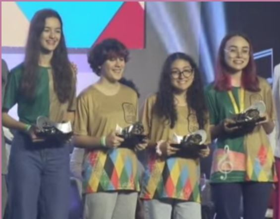
Cerimônia da OBMEPDesde 2016, a Procuradoria Especial da Mulher da Assembleia Legislativa do Rio Grande do Sul, em parceria com o Movimento Meninas Olímpicas, homenageia meninas medalhistas de ouro.
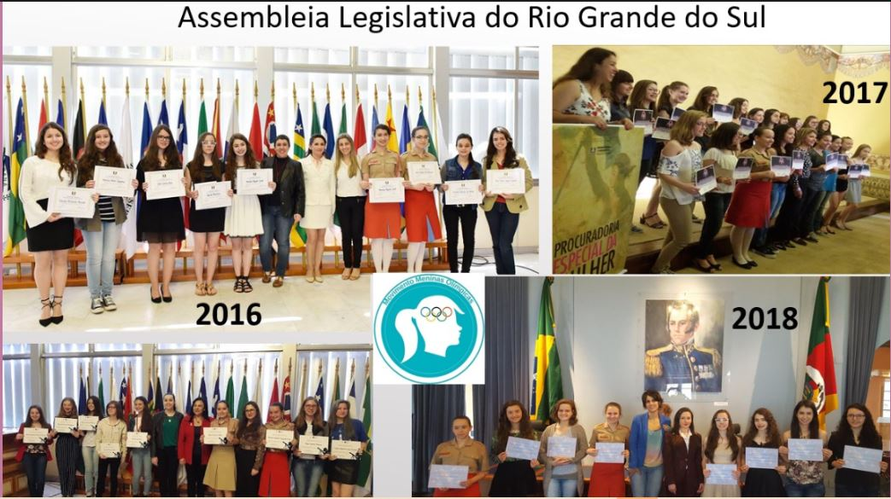
Até 2016, os professores das Semanas Olímpicas da OBM e da OBI eram sempre homens. Em 2016, uma das primeiras ações do movimento foi apoiar a participação das meninas nesses espaços.
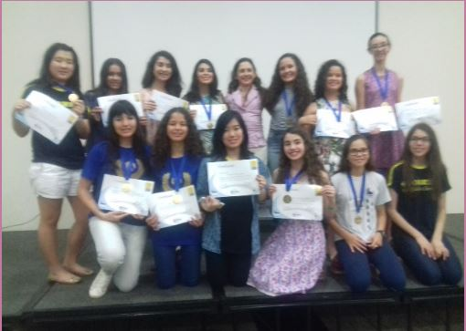
Imagem da Semana Olímpica OBI 2016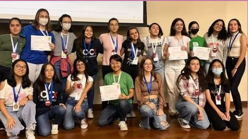
Imagem da Semana Olímpica OBI 2022 Imagem da Semana Olímpica OBM 2016
Imagem da Semana Olímpica OBM 2016
 Imagem da Semana Olímpica OBM 2022
Imagem da Semana Olímpica OBM 2022
Meninas olímpicas de hoje serão as mulheres nos espaços de decisão do amanhã.
Desde 2016 incentivando as meninas olímpicas.